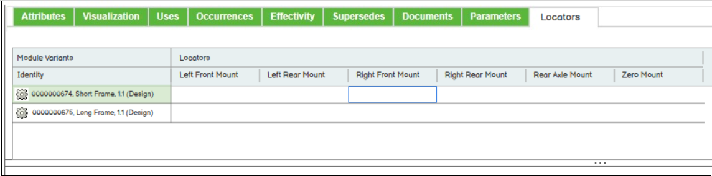

Locators Tab¶
A locator represents a conceptual location defined for a configurable module which can be utilized within the positioning architecture for a configurable product to assemble child and parent configurable modules. The positioning architecture describes how any module variant associated with a configurable module are placed, and the locators allow you to map the generic definitions on the configurable module to the coordinate systems for each module variant that were exposed during the publishing process.
The Locators tab allows you to view, edit, and delete locators for a configurable module and define the mapping between locators to module variant coordinate systems. This tab is available from part structure browser for a configurable product. For more information, refer to Managing Locator Definitions in Locators Tab.